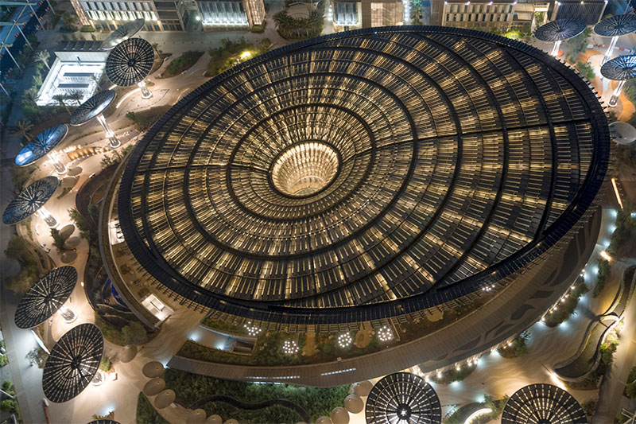
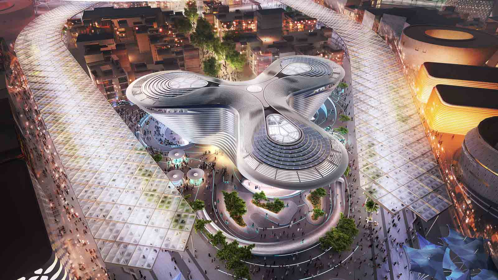
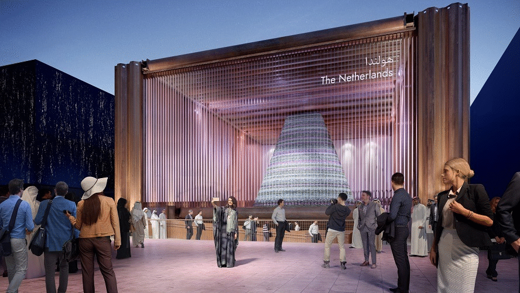

✨ Expo2020: A Glimpse into the World ✨


| |
✨ Expo2020: A Glimpse into the World ✨ |
|
|
|
|
The Sustainability District |
The Sustainability district is one of the most engaging and attractive districts in Expo2020 Dubai. You will encounter different advanced technologies from various countries. Besides, you will discover what countries do to attain and champion sustainability. In addition, the sustainability district highlights the harmony between nature and advanced technologies. Morover, it covers the importance of reducing carbon footprints and minimizing its environmental impacts.
|
| | |
Mobility District |
The Mobility District demonstrates the development of the human race. In addition, the district focuses on displaying the transition between the traditional world and the digital world. Likewise, the district highlights the importance of technology and how humanity is making greater leaps through advanced technologies. Lastly, the Mobility District shows how societies from different cultures exchange ideas and goods to drive the world forward.
|
| | |
Opportunity District |
The Opportunity District travels far and wide across the expo site intersecting with a great many other ideas and conversations. The Opportunity District theme discusses the united nations' sustainable development goals. Besides, the district demonstrates how future technologies and clever ideas can develop humanity.
|